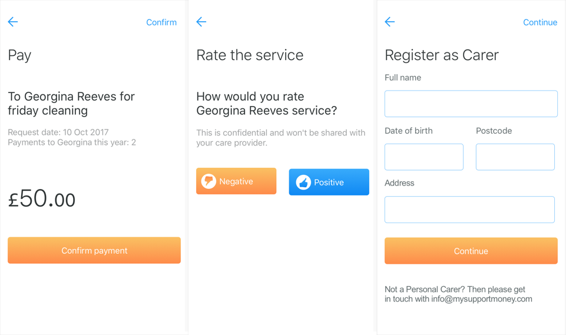
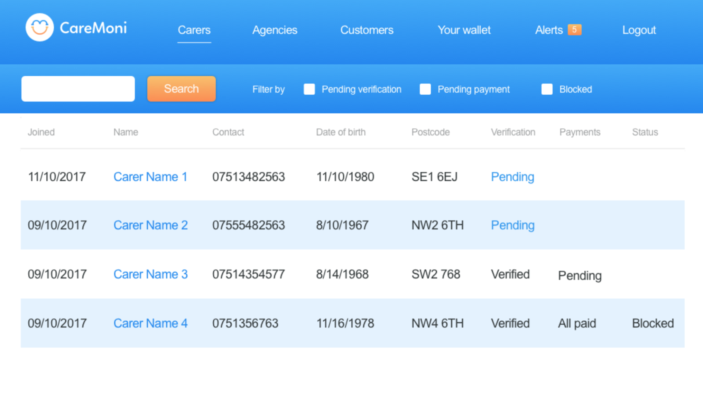

Caremoni
2017-2018, United Kingdom. Caremoni. Caremoni Deck
The problem
We worked in collaboration with My support broker, a social enterprise. They needed a payment solution for their existing health budget management software. They had very good knowledge and access to their customers so very little discovery and idea validation research was needed for this project. The problem was that all payments and reconciliation were done manually and prone to human error. NHS requires better reporting on how care budget was being spent.
How did I do it
I started identifying the different type of users: My Support Broker ops (2 employees), independent carers, care agencies, government and people that needed care. I interviewed all parties asking them to explain the pains of their current process. I created user flows for all cases and we brainstormed with the team about how we could solve these issues. I implemented a "concierge" system to validate if the new user flows were the right ones. The UI was a simple Html website and payments were made manually.
What I learned
I learned that most people receiving care and their relatives where quite tech-savvy, contrary to my initial beliefs. MSB has several delays collecting invoices, many manual processes could be automated. Relatives had little time and patience to handle money issues, collecting and saving receipts. Customers were chasing MSB for money and that caused stress on both sides.
How did I solve it
After running some sessions and adjusting I sketched and created some clickable prototypes to test the UI with all users. For operators, I made a Dashboard so they could allocate budget, monitor and report to NHS. For carers and customers, we made an app that allowed requesting and authorising payments.
Results
We run a successful pilot with a subset of My Support Broker customers and they started using the new reporting and monitoring dashboard we design for them. Operators saved a lot of time and money with the reduction of paperwork and calls to customers. Reporting to the NHS became more efficient and automated. We will continue expanding the tool to different CCGs and more service providers in the future.

See how the app and dashboard works:

CCGs were able to review and report all payments happening in Caremoni.
